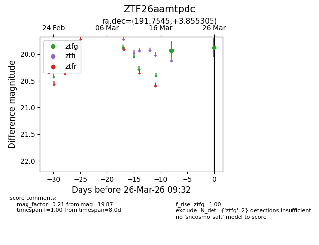
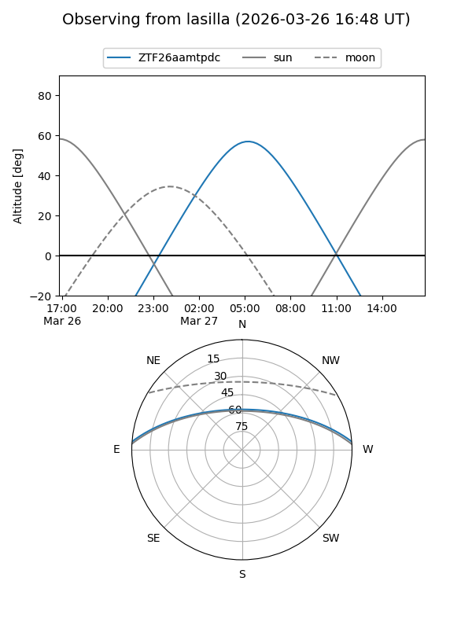
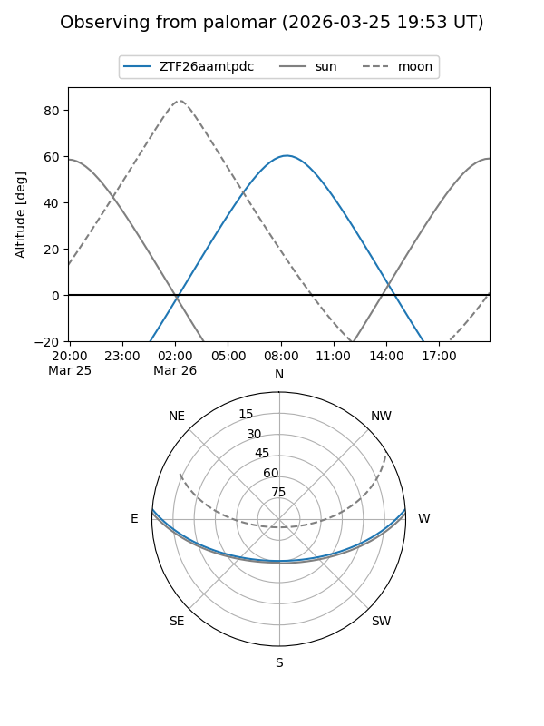
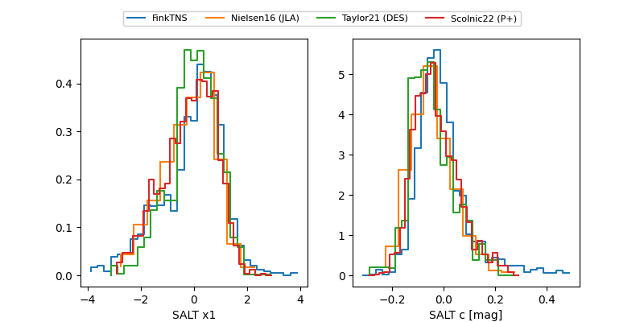

ZTF26aamtpdc
Target ZTF26aamtpdc at 2026-03-26 09:35
Aliases and brokers:
FINK: link
Lasair: link
ALeRCE: link
alt names
ZTF26aamtpdc (ztf,fink_ztf)
Coordinates:
equatorial (ra, dec) = 191.7545,+3.85530
equatorial (HMS+DMS) = 12:47:01.07,+03:51:19.10
galactic (l, b) = (300.1433,+66.70312)
Flags:
Photometry:
last ztfg=19.87
2 ztfg detections
Lightcurve

Visibility


Additional plots
